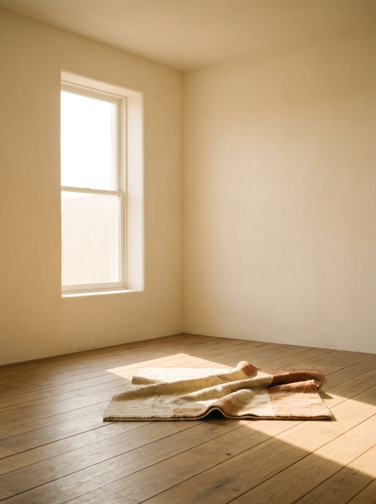
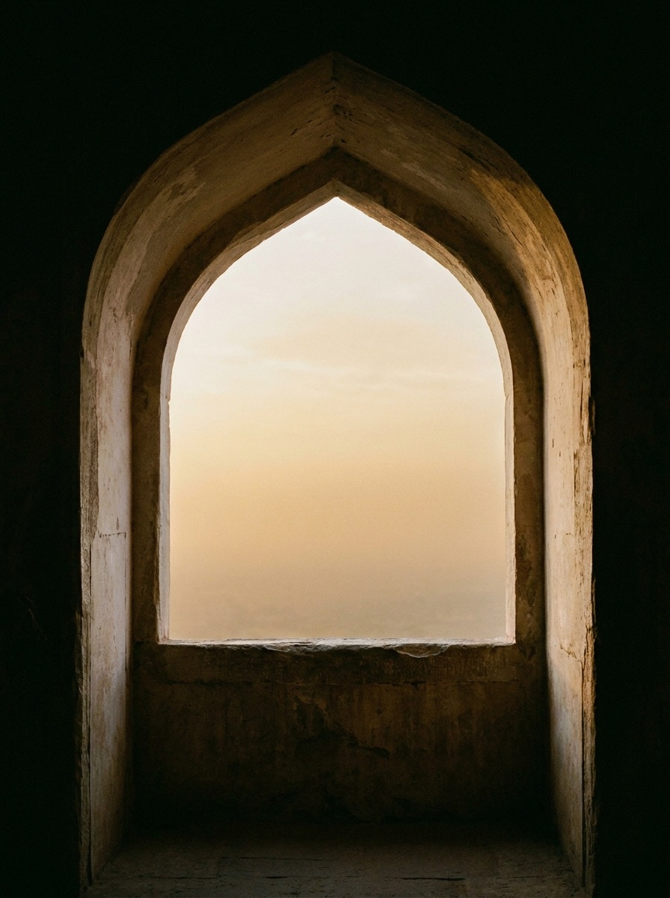
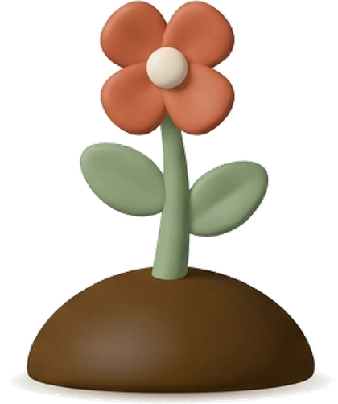

Uyg'oning
Oddiy budilnikni yotgan joyda o'chirib yuborasiz. Bu boshqacha ishlaydi — joynamozni kameraga ko'rsatmaguningizcha signal tinmaydi.
Ilova buyumni ko'rganini tasdiqlaydi, namoz o'qiganingizni emas.
05:34
Bomdod Toshkent
Bomdodga uyg'oning, namoz vaqtida telefonni jim qiling, muntazamlikni ko'ring.
Qanday ishlaydi

Oddiy budilnikni yotgan joyda o'chirib yuborasiz. Bu boshqacha ishlaydi — joynamozni kameraga ko'rsatmaguningizcha signal tinmaydi.
Ilova buyumni ko'rganini tasdiqlaydi, namoz o'qiganingizni emas.
Shu vaqtda telefon jim turadi. Rejimni siz yoqasiz — eslatma yoki qulf. Bu jazo emas.

Har namoz o'simlikni bir bosqich o'stiradi. O'tkazib yuborilgan kun qurib qolmaydi — bog'ingiz to'xtab turadi.
100%
Biz daromadning emas, sof foydaning 100% deymiz. Avval do'kon komissiyasi, server, soliq va ish haqi. Qolgani har oy ochiq hisobotda.